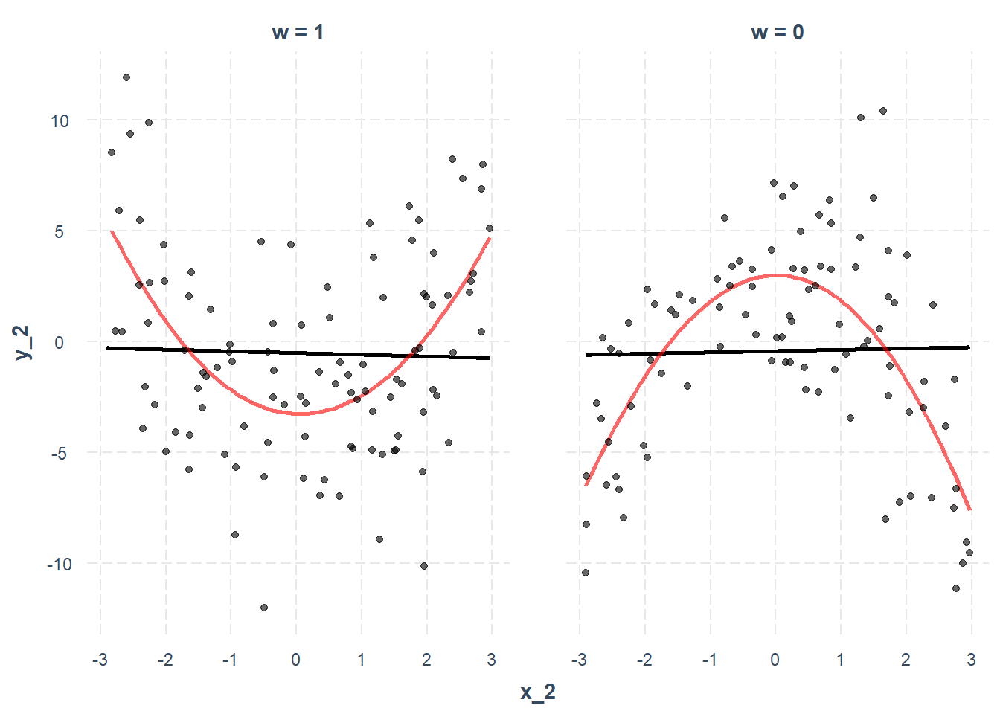
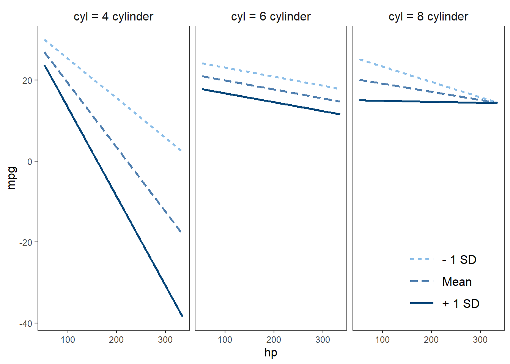
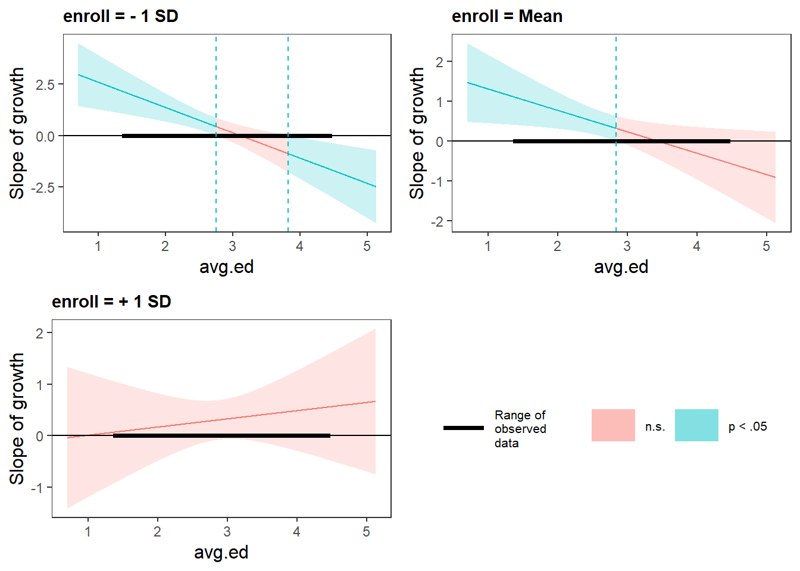
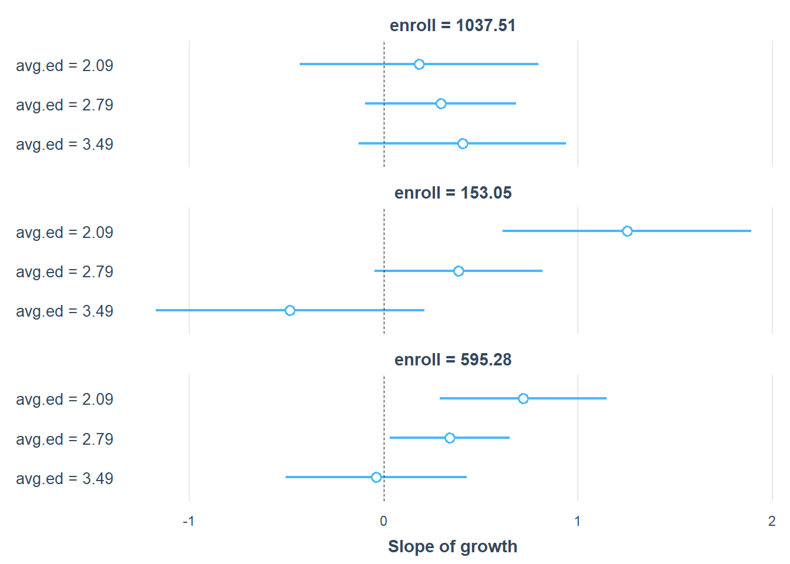
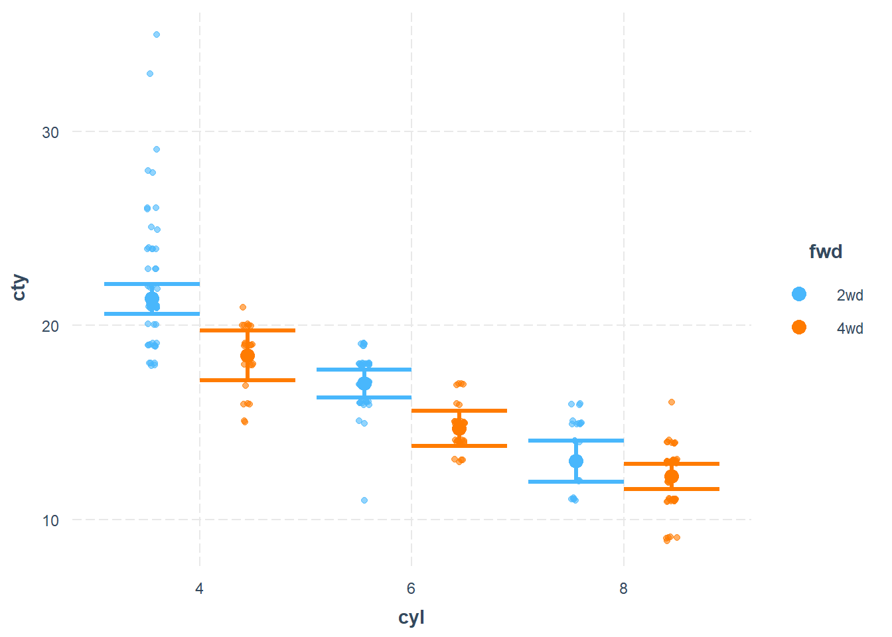
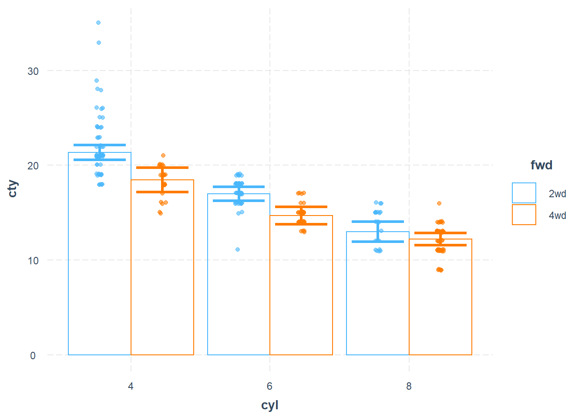

15.3 interactions package
- Recommend
install.packages("interactions")15.3.1 Continuous interaction
- (at least one of the two variables is continuous)
library(interactions)
library(jtools) # for summ()
states <- as.data.frame(state.x77)
fiti <- lm(Income ~ Illiteracy * Murder + `HS Grad`, data = states)
summ(fiti)| Observations | 50 |
| Dependent variable | Income |
| Type | OLS linear regression |
| F(4,45) | 10.65 |
| R² | 0.49 |
| Adj. R² | 0.44 |
| Est. | S.E. | t val. | p | |
|---|---|---|---|---|
| (Intercept) | 1414.46 | 737.84 | 1.92 | 0.06 |
| Illiteracy | 753.07 | 385.90 | 1.95 | 0.06 |
| Murder | 130.60 | 44.67 | 2.92 | 0.01 |
HS Grad
|
40.76 | 10.92 | 3.73 | 0.00 |
| Illiteracy:Murder | -97.04 | 35.86 | -2.71 | 0.01 |
| Standard errors: OLS |
For continuous moderator, the three values chosen are:
-1 SD above the mean
The mean
-1 SD below the mean
interact_plot(fiti,
pred = Illiteracy,
modx = Murder,
# centered = "none", # if you don't want the plot to mean-center
# modx.values = "plus-minus", # exclude the mean value of the moderator
# modx.values = "terciles" # split moderator's distribution into 3 groups
plot.points = T, # overlay data
point.shape = T, # different shape for differennt levels of the moderator
jitter = 0.1, # if two data points are on top one another, this moves them apart by little
# other appearance option
x.label = "X label",
y.label = "Y label",
main.title = "Title",
legend.main = "Legend Title",
colors = "blue",
# include confidence band
interval = TRUE,
int.width = 0.9,
robust = TRUE # use robust SE
) 
To include weights from the regression inn the plot
fiti <- lm(Income ~ Illiteracy * Murder,
data = states,
weights = Population)
interact_plot(fiti,
pred = Illiteracy,
modx = Murder,
plot.points = TRUE)
Partial Effect Plot
library(ggplot2)
data(cars)
fitc <- lm(cty ~ year + cyl * displ + class + fl + drv, data = mpg)
summ(fitc)| Observations | 234 |
| Dependent variable | cty |
| Type | OLS linear regression |
| F(16,217) | 99.73 |
| R² | 0.88 |
| Adj. R² | 0.87 |
| Est. | S.E. | t val. | p | |
|---|---|---|---|---|
| (Intercept) | -200.98 | 47.01 | -4.28 | 0.00 |
| year | 0.12 | 0.02 | 5.03 | 0.00 |
| cyl | -1.86 | 0.28 | -6.69 | 0.00 |
| displ | -3.56 | 0.66 | -5.41 | 0.00 |
| classcompact | -2.60 | 0.93 | -2.80 | 0.01 |
| classmidsize | -2.63 | 0.93 | -2.82 | 0.01 |
| classminivan | -4.41 | 1.04 | -4.24 | 0.00 |
| classpickup | -4.37 | 0.93 | -4.68 | 0.00 |
| classsubcompact | -2.38 | 0.93 | -2.56 | 0.01 |
| classsuv | -4.27 | 0.87 | -4.92 | 0.00 |
| fld | 6.34 | 1.69 | 3.74 | 0.00 |
| fle | -4.57 | 1.66 | -2.75 | 0.01 |
| flp | -1.92 | 1.59 | -1.21 | 0.23 |
| flr | -0.79 | 1.57 | -0.50 | 0.61 |
| drvf | 1.40 | 0.40 | 3.52 | 0.00 |
| drvr | 0.49 | 0.46 | 1.06 | 0.29 |
| cyl:displ | 0.36 | 0.08 | 4.56 | 0.00 |
| Standard errors: OLS |
interact_plot(
fitc,
pred = displ,
modx = cyl,
partial.residuals = TRUE, # the observed data is based on displ, cyl, and model error
modx.values = c(4, 5, 6, 8)
)
Check linearity assumption in the model
Plot the lines based on the subsample (red line), and whole sample (black line)
x_2 <- runif(n = 200, min = -3, max = 3)
w <- rbinom(n = 200, size = 1, prob = 0.5)
err <- rnorm(n = 200, mean = 0, sd = 4)
y_2 <- 2.5 - x_2 ^ 2 - 5 * w + 2 * w * (x_2 ^ 2) + err
data_2 <- as.data.frame(cbind(x_2, y_2, w))
model_2 <- lm(y_2 ~ x_2 * w, data = data_2)
summ(model_2)| Observations | 200 |
| Dependent variable | y_2 |
| Type | OLS linear regression |
| F(3,196) | 1.36 |
| R² | 0.02 |
| Adj. R² | 0.01 |
| Est. | S.E. | t val. | p | |
|---|---|---|---|---|
| (Intercept) | -0.21 | 0.45 | -0.47 | 0.64 |
| x_2 | 0.43 | 0.27 | 1.61 | 0.11 |
| w | 0.78 | 0.66 | 1.18 | 0.24 |
| x_2:w | -0.52 | 0.39 | -1.35 | 0.18 |
| Standard errors: OLS |
interact_plot(
model_2,
pred = x_2,
modx = w,
linearity.check = TRUE,
plot.points = TRUE
)
15.3.1.1 Simple Slopes Analysis
continuous by continuous variable interaction (still work for binary)
conditional slope of the variable of interest (i.e., the slope of \(X\) when we hold \(M\) constant at a value)
Using sim_slopes it will
mean-center all variables except the variable of interest
For moderator that is
Continuous, it will pick mean, and plus/minus 1 SD
Categorical, it will use all factor
sim_slopes requires
A regression model with an interaction term)
Variable of interest (
pred =)Moderator: (
modx =)
sim_slopes(fiti,
pred = Illiteracy,
modx = Murder,
johnson_neyman = FALSE)
#> SIMPLE SLOPES ANALYSIS
#>
#> Slope of Illiteracy when Murder = 5.420973 (- 1 SD):
#>
#> Est. S.E. t val. p
#> -------- -------- -------- ------
#> -71.59 268.65 -0.27 0.79
#>
#> Slope of Illiteracy when Murder = 8.685043 (Mean):
#>
#> Est. S.E. t val. p
#> --------- -------- -------- ------
#> -437.12 175.82 -2.49 0.02
#>
#> Slope of Illiteracy when Murder = 11.949113 (+ 1 SD):
#>
#> Est. S.E. t val. p
#> --------- -------- -------- ------
#> -802.66 145.72 -5.51 0.00
# plot the coefficients
ss <- sim_slopes(fiti,
pred = Illiteracy,
modx = Murder,
modx.values = c(0, 5, 10))
plot(ss)
# table
ss <- sim_slopes(fiti,
pred = Illiteracy,
modx = Murder,
modx.values = c(0, 5, 10))
library(huxtable)
as_huxtable(ss)| Value of Murder | Slope of Illiteracy |
| Value of Murder | slope |
|---|---|
| 0.00 | 535.50 (458.77) |
| 5.00 | -24.44 (282.48) |
| 10.00 | -584.38 (152.37)*** |
15.3.1.2 Johnson-Neyman intervals
To know all the values of the moderator for which the slope of the variable of interest will be statistically significant, we can use the Johnson-Neyman interval (P. O. Johnson and Neyman 1936)
Even though we kind of know that the alpha level when implementing the Johnson-Neyman interval is not correct (Bauer and Curran 2005), not until recently that there is a correction for the type I and II errors (Esarey and Sumner 2017).
Since Johnson-Neyman inflates the type I error (comparisons across all values of the moderator)
sim_slopes(fiti,
pred = Illiteracy,
modx = Murder,
johnson_neyman = TRUE,
control.fdr = TRUE, # correction for type I and II
# cond.int = TRUE, # include conditional intecepts
robust = "HC3", # rubust SE
# centered = "none", # don't mean-centered non-focal variables
jnalpha = 0.05)
#> JOHNSON-NEYMAN INTERVAL
#>
#> When Murder is OUTSIDE the interval [-11.70, 8.75], the slope of Illiteracy
#> is p < .05.
#>
#> Note: The range of observed values of Murder is [1.40, 15.10]
#>
#> Interval calculated using false discovery rate adjusted t = 2.33
#>
#> SIMPLE SLOPES ANALYSIS
#>
#> Slope of Illiteracy when Murder = 5.420973 (- 1 SD):
#>
#> Est. S.E. t val. p
#> -------- -------- -------- ------
#> -71.59 256.60 -0.28 0.78
#>
#> Slope of Illiteracy when Murder = 8.685043 (Mean):
#>
#> Est. S.E. t val. p
#> --------- -------- -------- ------
#> -437.12 191.07 -2.29 0.03
#>
#> Slope of Illiteracy when Murder = 11.949113 (+ 1 SD):
#>
#> Est. S.E. t val. p
#> --------- -------- -------- ------
#> -802.66 178.75 -4.49 0.00For plotting, we can use johnson_neyman
johnson_neyman(fiti,
pred = Illiteracy,
modx = Murder,
control.fdr = TRUE, # correction for type I and II
alpha = .05)
#> JOHNSON-NEYMAN INTERVAL
#>
#> When Murder is OUTSIDE the interval [-22.57, 8.52], the slope of Illiteracy
#> is p < .05.
#>
#> Note: The range of observed values of Murder is [1.40, 15.10]
#>
#> Interval calculated using false discovery rate adjusted t = 2.33
Note:
- y-axis is the conditional slope of the variable of interest
15.3.1.3 3-way interaction
# fita3 <-
# lm(rating ~ privileges * critical * learning, data = attitude)
#
# probe_interaction(
# fita3,
# pred = critical,
# modx = learning,
# mod2 = privileges,
# alpha = .1
# )
mtcars$cyl <- factor(mtcars$cyl,
labels = c("4 cylinder", "6 cylinder", "8 cylinder"))
fitc3 <- lm(mpg ~ hp * wt * cyl, data = mtcars)
interact_plot(fitc3,
pred = hp,
modx = wt,
mod2 = cyl) +
theme_apa(legend.pos = "bottomright")
Johnson-Neyman 3-way interaction
library(survey)
data(api)
dstrat <- svydesign(
id = ~ 1,
strata = ~ stype,
weights = ~ pw,
data = apistrat,
fpc = ~ fpc
)
regmodel3 <-
survey::svyglm(api00 ~ avg.ed * growth * enroll, design = dstrat)
sim_slopes(
regmodel3,
pred = growth,
modx = avg.ed,
mod2 = enroll,
jnplot = TRUE
)
#> ############### While enroll (2nd moderator) = 153.0518 (- 1 SD) ##############
#>
#> JOHNSON-NEYMAN INTERVAL
#>
#> When avg.ed is OUTSIDE the interval [2.75, 3.82], the slope of growth is p
#> < .05.
#>
#> Note: The range of observed values of avg.ed is [1.38, 4.44]
#>
#> SIMPLE SLOPES ANALYSIS
#>
#> Slope of growth when avg.ed = 2.085002 (- 1 SD):
#>
#> Est. S.E. t val. p
#> ------ ------ -------- ------
#> 1.25 0.32 3.86 0.00
#>
#> Slope of growth when avg.ed = 2.787381 (Mean):
#>
#> Est. S.E. t val. p
#> ------ ------ -------- ------
#> 0.39 0.22 1.75 0.08
#>
#> Slope of growth when avg.ed = 3.489761 (+ 1 SD):
#>
#> Est. S.E. t val. p
#> ------- ------ -------- ------
#> -0.48 0.35 -1.37 0.17
#>
#> ################ While enroll (2nd moderator) = 595.2821 (Mean) ###############
#>
#> JOHNSON-NEYMAN INTERVAL
#>
#> When avg.ed is OUTSIDE the interval [2.84, 7.83], the slope of growth is p
#> < .05.
#>
#> Note: The range of observed values of avg.ed is [1.38, 4.44]
#>
#> SIMPLE SLOPES ANALYSIS
#>
#> Slope of growth when avg.ed = 2.085002 (- 1 SD):
#>
#> Est. S.E. t val. p
#> ------ ------ -------- ------
#> 0.72 0.22 3.29 0.00
#>
#> Slope of growth when avg.ed = 2.787381 (Mean):
#>
#> Est. S.E. t val. p
#> ------ ------ -------- ------
#> 0.34 0.16 2.16 0.03
#>
#> Slope of growth when avg.ed = 3.489761 (+ 1 SD):
#>
#> Est. S.E. t val. p
#> ------- ------ -------- ------
#> -0.04 0.24 -0.16 0.87
#>
#> ############### While enroll (2nd moderator) = 1037.5125 (+ 1 SD) ##############
#>
#> JOHNSON-NEYMAN INTERVAL
#>
#> The Johnson-Neyman interval could not be found. Is the p value for your
#> interaction term below the specified alpha?
#>
#> SIMPLE SLOPES ANALYSIS
#>
#> Slope of growth when avg.ed = 2.085002 (- 1 SD):
#>
#> Est. S.E. t val. p
#> ------ ------ -------- ------
#> 0.18 0.31 0.58 0.56
#>
#> Slope of growth when avg.ed = 2.787381 (Mean):
#>
#> Est. S.E. t val. p
#> ------ ------ -------- ------
#> 0.29 0.20 1.49 0.14
#>
#> Slope of growth when avg.ed = 3.489761 (+ 1 SD):
#>
#> Est. S.E. t val. p
#> ------ ------ -------- ------
#> 0.40 0.27 1.49 0.14
Report
ss3 <-
sim_slopes(regmodel3,
pred = growth,
modx = avg.ed,
mod2 = enroll)
plot(ss3)
as_huxtable(ss3)| enroll = 153 | |
| Value of avg.ed | Slope of growth |
| Value of avg.ed | slope |
|---|---|
| 2.09 | 1.25 (0.32)*** |
| 2.79 | 0.39 (0.22)# |
| enroll = 595.28 | |
| Value of avg.ed | Slope of growth |
| 3.49 | -0.48 (0.35) |
| 2.09 | 0.72 (0.22)** |
| 2.79 | 0.34 (0.16)* |
| enroll = 1037.51 | |
| Value of avg.ed | Slope of growth |
| 3.49 | -0.04 (0.24) |
| 2.09 | 0.18 (0.31) |
| 2.79 | 0.29 (0.20) |
| 3.49 | 0.40 (0.27) |
15.3.2 Categorical interaction
library(ggplot2)
mpg2 <- mpg %>%
mutate(cyl = factor(cyl))
mpg2["auto"] <- "auto"
mpg2$auto[mpg2$trans %in% c("manual(m5)", "manual(m6)")] <- "manual"
mpg2$auto <- factor(mpg2$auto)
mpg2["fwd"] <- "2wd"
mpg2$fwd[mpg2$drv == "4"] <- "4wd"
mpg2$fwd <- factor(mpg2$fwd)
## Drop the two cars with 5 cylinders (rest are 4, 6, or 8)
mpg2 <- mpg2[mpg2$cyl != "5",]
## Fit the model
fit3 <- lm(cty ~ cyl * fwd * auto, data = mpg2)
library(jtools) # for summ()
summ(fit3)| Observations | 230 |
| Dependent variable | cty |
| Type | OLS linear regression |
| F(11,218) | 61.37 |
| R² | 0.76 |
| Adj. R² | 0.74 |
| Est. | S.E. | t val. | p | |
|---|---|---|---|---|
| (Intercept) | 21.37 | 0.39 | 54.19 | 0.00 |
| cyl6 | -4.37 | 0.54 | -8.07 | 0.00 |
| cyl8 | -8.37 | 0.67 | -12.51 | 0.00 |
| fwd4wd | -2.91 | 0.76 | -3.83 | 0.00 |
| automanual | 1.45 | 0.57 | 2.56 | 0.01 |
| cyl6:fwd4wd | 0.59 | 0.96 | 0.62 | 0.54 |
| cyl8:fwd4wd | 2.13 | 0.99 | 2.15 | 0.03 |
| cyl6:automanual | -0.76 | 0.90 | -0.84 | 0.40 |
| cyl8:automanual | 0.71 | 1.18 | 0.60 | 0.55 |
| fwd4wd:automanual | -1.66 | 1.07 | -1.56 | 0.12 |
| cyl6:fwd4wd:automanual | 1.29 | 1.52 | 0.85 | 0.40 |
| cyl8:fwd4wd:automanual | -1.39 | 1.76 | -0.79 | 0.43 |
| Standard errors: OLS |
cat_plot(fit3,
pred = cyl,
modx = fwd,
plot.points = T)
#line plots
cat_plot(
fit3,
pred = cyl,
modx = fwd,
geom = "line",
point.shape = TRUE,
# colors = "Set2", # choose color
vary.lty = TRUE
)
# bar plot
cat_plot(
fit3,
pred = cyl,
modx = fwd,
geom = "bar",
interval = T,
plot.points = TRUE
)